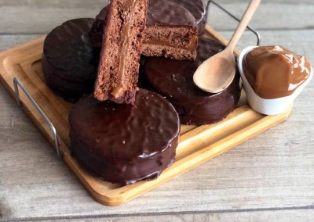

Un clásico argentino: el alfajor de dulce de leche con baño de chocolate negro. Hacelo vos mismx en casa.

¿Qué necesitás?
400 gr de chocolate semiamargo
500 gr de dulce de leche repostero
175 gr de manteca
175 gr de azúcar impalpable
2 huevos
1 cucharadita de esencia de vainilla
15 gr de miel
Ralladura de 1/2 limón
1/2 kg de harina
1/2 cucharadita de carbonato de amonio
25 gr de maizena
1/2 cucharadita de polvo de hornear
(Con estas cantidades obtenés más o menos 30 alfajores).
¿Cómo se preparan?
Para hacer la masa, primero batimos la manteca y el azúcar impalpable hasta obtener una mezcla cremosa. Agregamos la esencia de vainilla, la miel y la ralladura de limón y lo volvemos a batir por unos segundos. Luego agregamos uno de los huevos y continuamos con el batido. Hacemos lo mismo con el segundo huevo.
Mezclamos el resto de los ingredientes (harina, carbonato de amonio, maizena y polvo de hornear) y los tamizamos directamente sobre el batido anterior. Los agregamos en dos veces y los integramos con una espátula o las manos.
Envolvemos la masa en papel film (preferiblemente dividida en dos partes para manipularla mejor) y la aplastamos con las manos. La llevamos a la heladera para que se enfríe durante 30 a 60 minutos.
Cuando la masa esté lista, la estiramos con unos 4 mm de espesor sobre una mesa espolvoreada con harina y la cortamos en círculos de unos 6 o 7 cm de diámetro para armar las tapas de los alfajores.
Colocamos las tapas en placas enmantecadas o enharinadas y las cocinamos en un horno precalentado a 180° durante 12 o 13 minutos.
Dejamos enfriar las tapas y empezamos a rellenarlas. Dejando los lados más "chatos" de las tapas hacia afuera, colocamos el dulce de leche en el medio y, al colocar la tapa de arriba, apretamos un poco con los dedos para que el mismo se extienda hasta el borde. Llevamos los alfajores a la heladera para que el dulce de leche se endurezca un poco.
Finalmente, bañamos los alfajores en un bowl de chocolate derretido en microondas o a baño maría y quitamos el exceso ayudándonos con una espátula. Los colocamos en una placa con papel manteca y los dejamos reposar unos minutos para que el chocolate se solidifique. Los despegamos y... ¡ya están listos para servir y disfrutar!
¿De dónde proviene la receta original?
Llamamos a estos alfajores "marplatenses" porque en la década de 1940, luego de que el panadero Benjamín Sisterna se los presentara, el señor Demetrio Elíades comenzó a producirlos y comercializarlos en su confitería "Havanna", ubicada en el centro de la famosa ciudad costera. Hoy en día pueden conseguirse en múltiples sucursales tanto dentro como fuera del país.